Ring Design
This section shows how to design a network based on interconnected rings. You can manually define or import SONET rings and then route traffic on these rings. You can also expand these legacy rings by adding stacked rings on top of them. The first example shows how to create rings. The second example shows how to size the rings. You can start from the second example by opening the appropriate file.
Procedure 3-8 Creating a Ring
- Open the WDMGuru_Tutorial_Ring_topology project.
- Select File > Open....
- Select the WDMGuru_Tutorial_Ring_topology project, then press Open.
- Save the file under a new name.
- Select File > Save As....
- In the treeview (left) pane, select your default models directory; the folder icon has a small green mark to indicate that it is the default directory.
- Specify Example14 as file name, and click Save.
- Inspect the SONET/SDH Ring Equipment dialog box.
- Select Network > Equipment Properties > SONET/SDH Ring Equipment...
- Select Generic and click on Edit Ring Model to inspect the Generic ring equipment model.
- Click Cancel to close both dialog boxes.
- Create SONET rings.
- Select Network > Ring Browser (or press the icon on the toolbar) In this dialog box you can view, add, and edit rings. At this point, no rings are present in the network.
- Press Create to define rings.
- Define the path of the ring by left-clicking on the nodes. Select node_01, node_00, node_06, and node_02.
- Set the properties of the ring you want to create in the Create a DCL Ring dialog box:
- Click Create.
- Define five more OC-48 2F-BLSR rings, as follows:
- A first ring between node_02, node_06, node_08, node_05, node_04, and node_03
- A second ring between node_06, node_07, node_11, and node_08
- A third ring between node_05, node_08, node_11, and node_12
- A fourth ring between node_07, node_09, node_15, node_10, and node_11
- A fifth ring between node_11, node_10, node_14, node_13, and node_12
- Close the ring browser.
- Inspect the DCL nodes.
- Select Network > Node Browser.
- Select Ports (View) and DCL (Layer).
- Right-click on a node in the node browser to change the ring interconnection type. Three types of ring interconnection are supported:
- Set the interconnection type of node_05, node_06, and node_12 to ADM plus DXC.
- Set the interconnection type of node_08 and node_11 to MSSP.
- Leave the interconnection type of all other nodes as ADM back-to-back.
- Close the node browser.
- Create the UPSR scenario.
- Change the type of the rings (UPSR scenario).
- Select Network > Ring Browser to visualize the rings. Expand the ring information by clicking on the + icon. Right-click on each stacked ring (for example, Ring#1-1), choose Set Type, and choose UPSR.
- Close the ring browser.
- Save and close the project
The example project is loaded.
The Save As dialog box appears.
This dialog box gives an overview of the different ring models supported in this project file. Note that there is only one ring model in this example. This is the default ring model, called "Generic". You can add, remove, edit, and copy ring models from this dialog box.
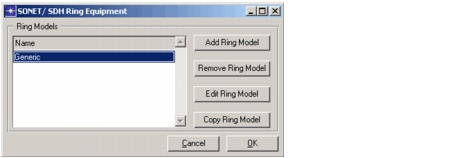
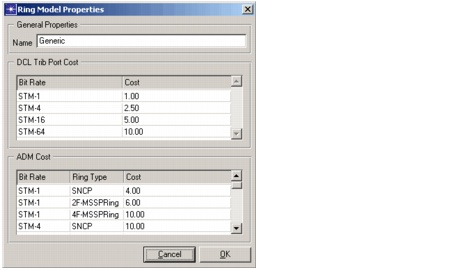
Use the Ring Model Properties dialog box to manage the costs for the selected ring model. You can specify costs for the SONET/SDH ADM equipment and the SONET/SDH tributary cards for each distinct bit rate. Select any field under Cost to edit and enter new values.
The Create a DCL Ring dialog box appears.
The ring is added to the ring browser.
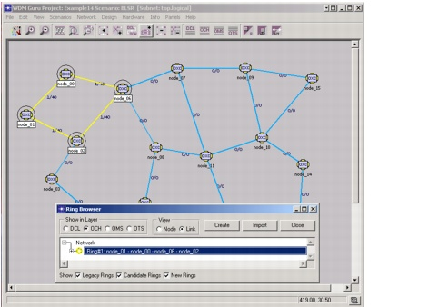
The browser lists the number of ADMs used per node.
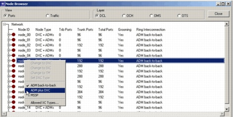
For more information on the different ring interconnection types supported in SP Guru Transport Planner, refer to the SP Guru Transport Planner User Manual.
Each ring changes to an UPSR ring.
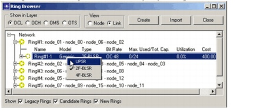
End of Procedure 3-8
Procedure 3-9 Sizing a Ring
- Open the project.
- Select File > Open....
- Select the project Example14.
- Choose Scenarios > Switch to Scenario > BLSR.
- Inspect the SONET rings.
- Select Network > Ring Browser or press the
 icon to visualize the rings.
icon to visualize the rings. - Click on the + icon to expand the footprint ring and on the second level of the ring browser all rings deployed in this location are shown (i.e. the stacked rings).
- Click on a ring to highlight the ring location on the screen.
- Click again on the + icon next to a ring to highlight all the nodes or links (depending on the View setting) in the third level of the ring browser.
- Close the ring browser.
- Inspect the DCL nodes.
- Select Network > Node Browser.
- Select Ports (View) and DCL (Layer).
- Close the node browser.
- Route SONET traffic on the ring (without adding SONET rings).
- Select Design > Dimension DCL Rings....
- Select the traffic matrix DCL_0.
- Uncheck the option Add stacked rings. With this option selected, the algorithm tries to route the traffic in the existing set of rings without adding new rings.
- Select the routing method Overall Cost Optimized, then click Route on Rings to route the traffic matrix DCL_0 on the rings.
- Route SONET traffic on the ring (adding 2F-BLSR rings).
- Click Tear Down in the Dimension DCL Rings dialog box to remove the traffic from the rings again.
- Put checkmarks next to the options Add stacked rings and Equip new fibers. This allows new rings to be added on top of existing rings.
- Select 2F-BLSR rings of the Generic ring model at OC-48 rate as the rings to add.
- Choose the routing method Overall Cost Optimized, then press Route on Rings.
- Close the Dimension DCL Rings dialog box.
- Inspect the SONET rings.
- Select Network > Ring Browser.
- Expand the ring information using the + icon and inspect the stacked rings added to each ring footprint.
- Close the ring browser.
- Inspect the routed connections.
- Select Network > Connection Browser.
- Select the DCL layer.
- Expand the DCL_0 traffic matrix (using the + icon) and inspect the routes of this traffic matrix.
- Close the connection browser.
- Select Scenarios > Switch to Scenario > UPSR to view the UPSR scenario.
- Route SONET traffic on the ring (adding UPSR rings).
- Select Design > Dimension DCL Rings....
- Select the traffic matrix DCL_0.
- Select the options Add stacked rings and Equip new fibers. This allows new rings to be added on top of the existing rings.
- Select UPSR rings of the Generic ring model at OC-48 rate as the rings to add.
- Choose the routing method Overall Cost Optimized, then click Route on Rings.
- Close the Dimension DCL Rings dialog box.
- Inspect the routed connections.
- Select Network > Connection Browser.
- Select the DCL layer.
- Expand the DCL_0 traffic matrix (using the + icon) and inspect the routes of this traffic matrix.
- Close the connection browser.
- Compare scenarios.
- Select Scenarios > Compare Scenarios.
- Close the dialog boxes.
- Close the project
Note—The project file Example14 was created in Procedure 3-8-Creating a Ring. If you did not do this procedure, select the WDMGuru_Tutorial_Rings project, then press Open.
The project contains two scenarios. Both scenarios contain a network of six rings. The UPSR scenario uses Unidirectional Path Switched Rings and the BLSR scenario uses Bidirectional Line Switched Rings. Start with the BLSR scenario.
On the first level of the ring browser, the so-called ring footprint is shown (i.e. the topological location of the ring).
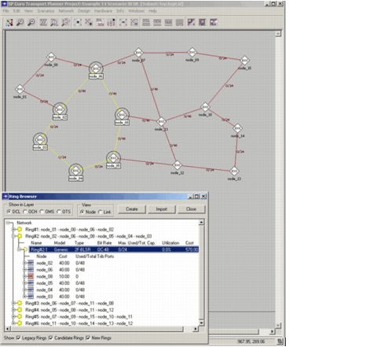
By switching between layers, you can also see how the ring is accommodated in the lower layers.
The number of ADMs used per node is shown. You can also change the ring interconnection type in the node browser by right-clicking on a node.
This dialog box allows you to route traffic on the rings in the network.
The results show that the ring capacity is used at about 89 percent.
The traffic matrix table shows that about 81 percent of the traffic has been routed on the rings. The rest of the traffic could not be routed on rings due to a capacity shortage and has been off-loaded to a mesh traffic matrix. This traffic can be accommodated in the network using the mesh routing or grooming functions.
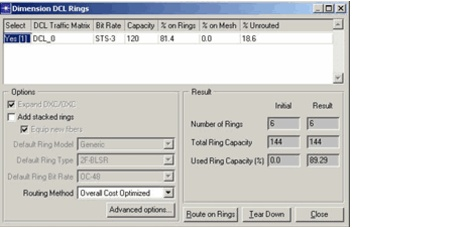
The results show that six new rings were added to route all traffic. The ring capacity has been used at about 78 percent. The traffic matrix table indicates that the rings accommodate 100 percent of the traffic.
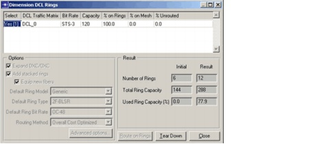
Also inspect the detailed link and node usage of each individual ring, by using the View per Node or Link radio buttons.
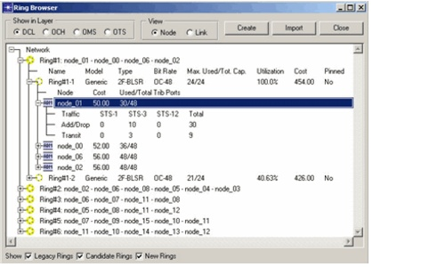
Some connections are routed over one ring and others are routed over multiple rings.
Connections routed over more than one ring can be expanded and the individual paths on the rings can be inspected in more detail. Note that on BLSR rings, no protection path is shown since the protection path is intrinsic to the ring and is failure-dependent.
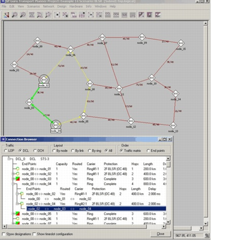
The results show that now 11 new rings are added in the BLSR case. This is because BLSR rings are more capacity-efficient than USPR rings.
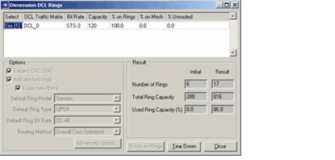
Connections on a UPSR ring have an explicit protection path (in red), because the protection path is not failure-dependent. The overlap of working and protection paths is indicated in orange.
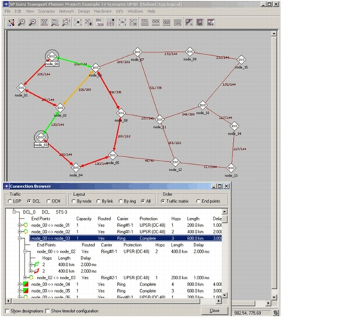
This shows the differences between the UPSR and BLSR design in terms of cost and capacity. The BLSR design is the cheapest solution, although the ADMs for BLSR are more expensive than for UPSR rings.
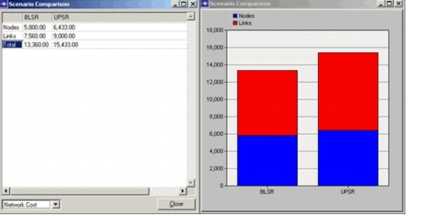
End of Procedure 3-9